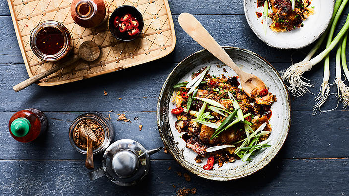

Fried Carrot Cake

Description
Despite the name, this Singaporean street food favourite doesn’t contain any carrot at all. Instead, white radish makes the base of this comforting savoury cake which is crisp on the outside while soft and chewy in the centre.
Ingredients
- 60ml (1/4 cup) vegetable oil
- 2 garlic cloves, finely chopped
- 2 tbsp preserved chopped radish (chye poh), washed and rinsed
- chilli paste, to taste (optional)
- 2 eggs, lightly beaten
- 1 tbsp caramel black sauce (karamel masakan)
- pinch freshly ground white pepper
Radish cake
- 500g white radish, peeled
- 200g rice flour
- 2 tsp sugar
- 1/4 salt
- vegetable stock
Steps
- For the radish cake, grate the radish and place into a large bamboo steamer basket. Cover and steam over low heat for
30 minutes or until translucent. Remove and set aside to cool.
- Combine the rice flour, sugar and salt in a large bowl. Add the stock and mix well, then add the cooled radish. Pour the
mixture into baking dish about 15 cm x 20 cm and steam over medium heat for 30 minutes or until a skewer withdraws
clean. Stand to cool, then refrigerate for 8 hours or overnight.
- Cut half the radish cake into bite-sized cubes. The remaining radish cake will keep refrigerated for up to 1 week.
- Heat a large non-stick frying pan over high heat, then add 2 tbsp oil. When the oil is hot, add the radish cubes and fry until
golden and slightly crisp on all sides. Move the radish cake to the outside of the pan, then add the remaining oil to the
centre of the pan. Add the garlic and preserved radish and stir for 30 seconds or until fragrant. Add the chilli paste if using.
- Stir together and mash the radish cube slightly to encourage the rough edges to be crispy. Reduce the heat to medium, add the
beaten eggs and allow to lightly set. Add the caramel black sauce and gently stir through. Gently flip the radish cake over and
cook until golden on both sides. Season with white pepper. Serve scattered with spring onions, sliced chillies and fried
shallots.